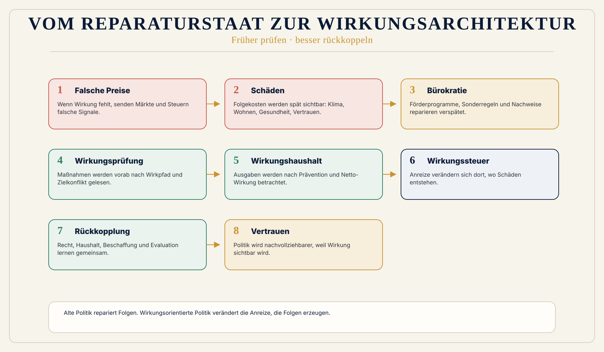

Symbolpolitik
Symbolpolitik misst Sichtbarkeit, nicht Wirkung.
 Wirkungsökonomie
Wirkungsökonomie
Für wen · Politik und Staat
Alte Politik repariert Folgen. Wirkungsorientierte Politik verändert die Anreize, die Folgen erzeugen.
Politik steht heute unter Druck, Klima, Wohnen, Pflege, Energie, Digitalisierung, Migration, Desinformation, Staatsfinanzen und Vertrauensverlust gleichzeitig zu bearbeiten.
Viele Antworten setzen spät an: Förderprogramme, Sonderregeln, Subventionen, Verbote, Ausnahmen und Nachweispflichten.
Die Wirkungsökonomie setzt früher an. Sie fragt, welche Zustände politische Entscheidungen tatsächlich verändern und wie diese Wirkung in Haushalt, Recht, Steuern, Beschaffung, Verwaltung und demokratische Kontrolle zurückfließt.
Warum diese Perspektive wichtig ist
Politik wird heute häufig daran gemessen, ob sie handelt: ein Gesetz, ein Paket, ein Kompromiss, ein Haushaltstitel. Handlung allein ist aber noch keine Wirkung.
Ein Gesetz kann gut gemeint sein und Zielkonflikte verschärfen. Eine Subvention kann kurzfristig helfen und langfristig falsche Strukturen stabilisieren. Ein Haushalt kann wachsen und trotzdem wenig verbessern.
Das Problem liegt nicht darin, dass Politik nichts tut. Das Problem liegt darin, dass Politik zu spät sieht, was ihr Handeln tatsächlich verändert.
Was heute falsch läuft
Symbolpolitik misst Sichtbarkeit, nicht Wirkung.
Ressortlogik zerlegt Probleme, die zusammenhängen.
Haushalte messen Ausgaben, nicht verhinderte Schäden.
Bürokratie wächst, wenn Preise und Märkte Wirkungen nicht abbilden.
Bürger:innen erleben Widersprüche: Schädliches bleibt billig, Verantwortliches wird teurer, und Politik repariert später mit immer neuen Regeln.
Warum Reparatur nicht reicht
ESG, Reporting, Nachhaltigkeitsberatung oder Reparaturpolitik können Anschlussräume sein. Sie lösen den Kernfehler aber nicht, wenn sie Wirkung nur beschreiben, nachträglich dokumentieren oder Schäden erst reparieren.
Die Wirkungsökonomie setzt früher an: beim Maßstab, bei der Fehlsteuerung und bei der Rückkopplung in Preise, Kapital, Haushalte, Management, Medien und Entscheidungen.
WÖk-Verschiebung
Die WÖk macht Politik zur Rückkopplungsarchitektur. Sie ersetzt demokratische Debatte nicht. Sie liefert ihr einen besseren Prüfmaßstab: Welche Wirkung erzeugt eine Maßnahme für Mensch, Planet und Demokratie?
Demokratische Parteien müssen nicht dieselben Antworten geben. Aber sie können sich auf dieselbe Wirkungsfrage beziehen. Dadurch werden Zielkonflikte sichtbarer, Verteilung ehrlicher, Folgekosten früher benannt und Prävention messbar.
Konkreter Gewinn
Was nicht passiert
Die WÖk ersetzt Märkte und demokratische Entscheidung nicht.
Sie ersetzt demokratische Entscheidung nicht durch Expertokratie.
Sie bewertet keine Personen und erzeugt keine Wahlempfehlung.
Wirkungspfad
Konkretes Beispiel
Wohnen, Klima und soziale Stabilität werden heute häufig getrennt bearbeitet: Mietrecht hier, Sanierungsförderung dort, Baukosten an anderer Stelle. Die WÖk fragt anders: Welche Wohnmodelle erzeugen positive Netto-Wirkung auf Bezahlbarkeit, Energie, Gesundheit, Quartier, Flächenverbrauch und demokratische Stabilität?
Visual
Links: Problem entsteht -> Schaden -> Sonderregel -> Bürokratie. Rechts: Daten -> Wirkungsprüfung -> Anreiz -> Prävention -> weniger Reparatur. Ruhig, keine Parteifarben.

Vertiefung
Die nächste Frage lautet nicht, wie diese Zielgruppe nachhaltiger wird. Sie lautet: Welche alte Steuerungslogik erzeugt das Problem, und wie verändert Wirkung die Logik selbst?
Quellenbasis / Status